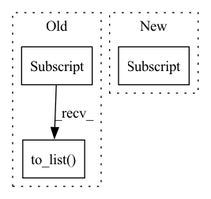

Pattern ID :14729
Before Change
return inter_feat
def _neg_sample_by_point_wise_sampling(self, uid_field, iid_field, neg_iids, inter_feat):
neg_iids = inter_feat[iid_field].to_list() + neg_iids
pos_inter_num = len(inter_feat)
After Change
labels = np.zeros(pos_inter_num * self.times, dtype=np.int64)
labels[: pos_inter_num] = 1
new_df[self.label_field] = labels
return self.dataset.join(new_df) if self.real_time_neg_sampling else new_df
In pattern: SUPERPATTERN
Frequency: 3
Non-data size: 3
Instances Fragment ID: 48480967
Project Name: rucaibox/recbole
Commit Name: 0d69aee9c38d1f4442ae201086ce7fa80b8dcf11
Time: 2020-07-30
Author: 297086016@qq.com
File Name: data/dataloader.py
M Class Name: GeneralInteractionBasedDataLoader
N Class Name: GeneralInteractionBasedDataLoader
M Method Name: _neg_sample_by_point_wise_sampling(5)
N Method Name: _neg_sample_by_point_wise_sampling(5)
M Parent Class: NegSampleBasedDataLoader
N Parent Class: NegSampleBasedDataLoader
M File Name: data/dataloader.py
N File Name: data/dataloader.py
M Start Line: 185
M End Line: 194
N Start Line: 185
N End Line: 192
Before Change
def __getitem__(self, index):
target = self.windows.metadata["target"]
keys = ["i_supercrop_in_trial", "i_start_in_trial", "i_stop_in_trial"]
supercrop_ind = self.windows.metadata.iloc[index][keys].to_list()
x = self.windows[index].get_data().squeeze(0)
return x, target[index], supercrop_ind
def __len__(self):After Change
self.description = description
def __getitem__(self, index):
x = self.windows.get_data(item=index)[0]
md = self.windows.metadata.iloc[index]
return x, md["target"], md[self.md_keys].to_list()
def __len__(self): Fragment ID: 48480965
Project Name: braindecode/braindecode
Commit Name: 92f69431496e540ea0bdb3b0456eb49604d795d0
Time: 2020-02-25
Author: hubert.jbanville@gmail.com
File Name: braindecode/datasets/base.py
M Class Name: WindowsDataset
N Class Name: WindowsDataset
M Method Name: __getitem__(2)
N Method Name: __getitem__(2)
M Parent Class: BaseDataset
N Parent Class: BaseDataset
M File Name: braindecode/datasets/base.py
N File Name: braindecode/datasets/base.py
M Start Line: 65
M End Line: 69
N Start Line: 66
N End Line: 68
Before Change
def __getitem__(self, index):
x = self.windows.get_data(item=index)[0].astype("float32")
md = self.windows.metadata.iloc[index]
return x, md["target"], md[
["i_supercrop_in_trial", "i_start_in_trial",
"i_stop_in_trial"]].to_list()
def __len__(self):
return len(self.windows.events)
After Change
y = self.y[index]
// necessary to cast as list to get list of
// three tensors from batch, otherwise get single 2d-tensor...
crop_inds = list(self.crop_inds[index] )
return X, y, crop_inds
// Alternative, using pandas metadata (~1.5 slower on my machine)
// (robintibor@gmail.com): Fragment ID: 48480968
Project Name: braindecode/braindecode
Commit Name: cbb4e291b7f105afa362df52e7f489c586b8fe7b
Time: 2020-02-28
Author: robintibor@gmail.com
File Name: braindecode/datasets/base.py
M Class Name: WindowsDataset
N Class Name: WindowsDataset
M Method Name: __getitem__(2)
N Method Name: __getitem__(2)
M Parent Class: BaseDataset
N Parent Class: BaseDataset
M File Name: braindecode/datasets/base.py
N File Name: braindecode/datasets/base.py
M Start Line: 65
M End Line: 69
N Start Line: 71
N End Line: 76